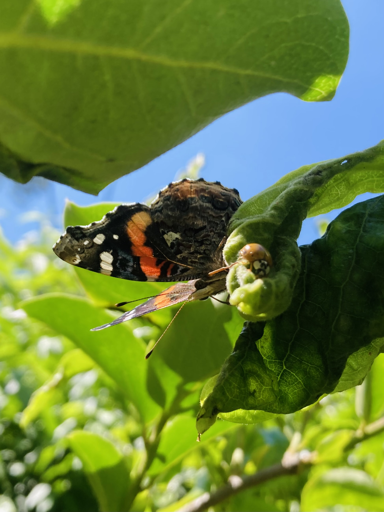
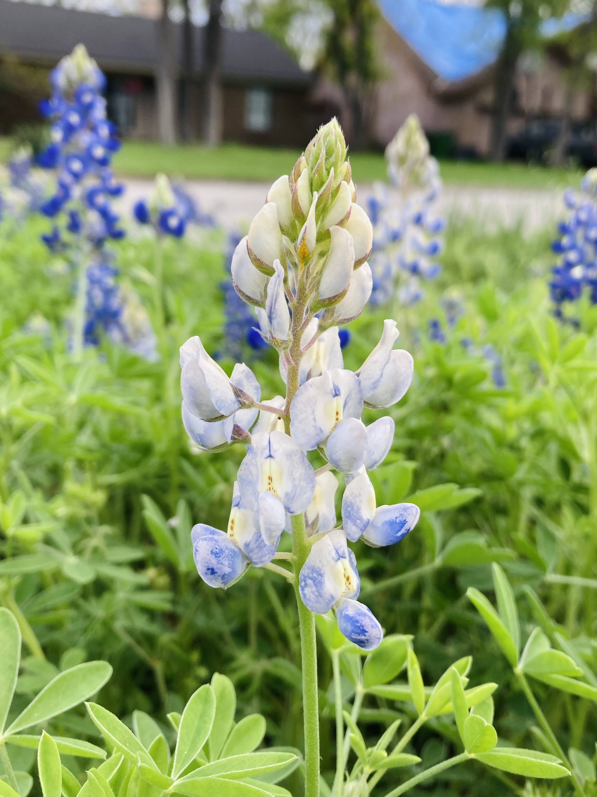
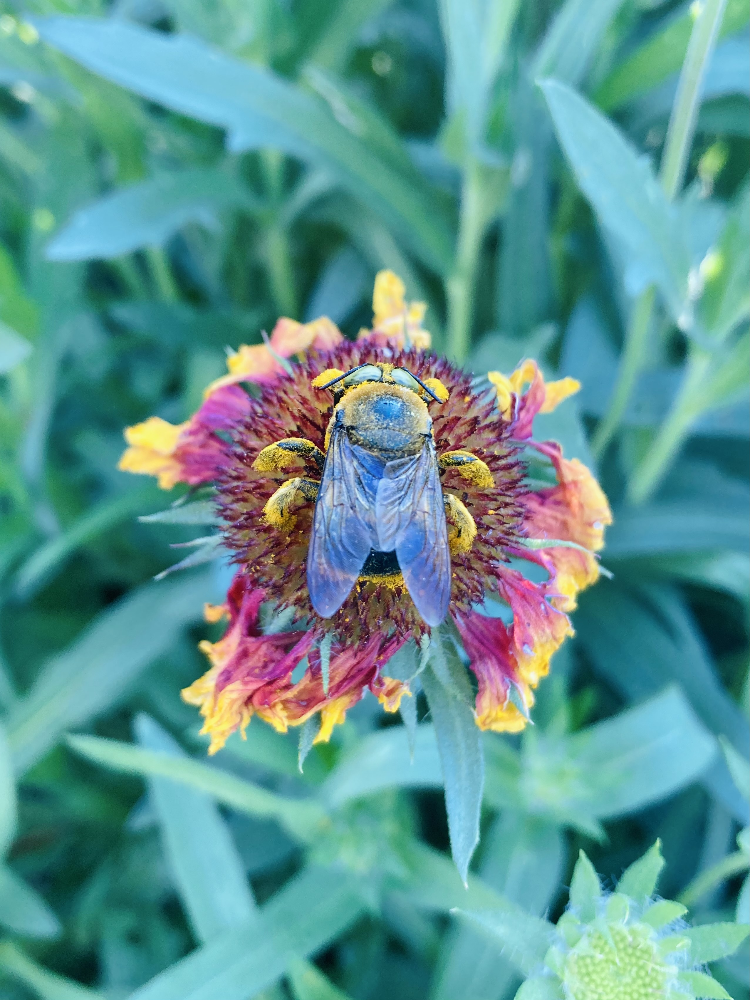
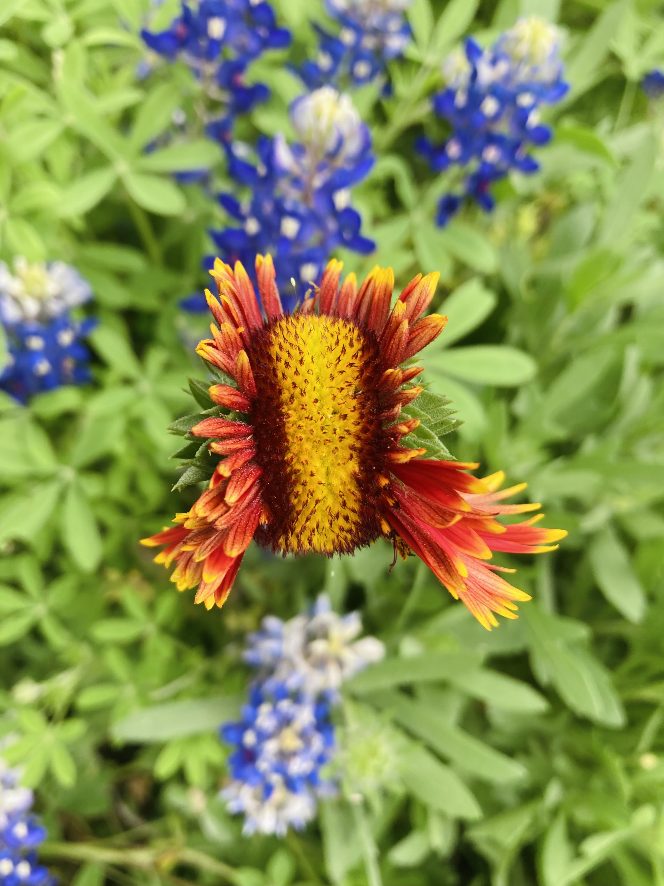
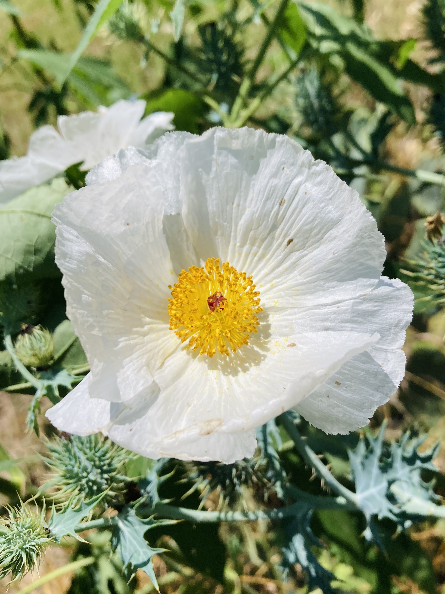
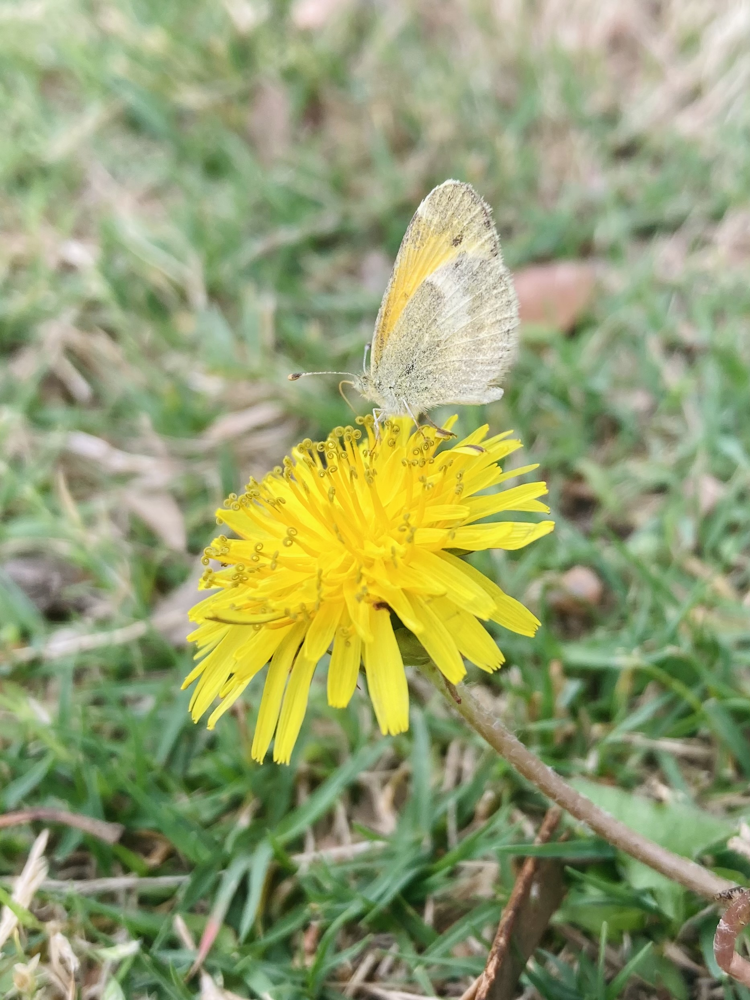

interests
amateur photographer | crocheting enthusiast | creative explorer
Exploring the world through the lens, capturing moments of beauty and wonder. My photography includes nature shots, especially close-ups of flowers and insects, showcasing the intricate details of the natural world.





